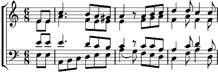

Refrain:
Si tu passes par ici,
Regarde vivre ce pays.
Si tu passes par ici,
Ecoute l'âme du pays.
1. Il est temps, la vigne se réveille.
Les sarments bougent au gré du vent.
S'en vont jouer, frôlant la treille,
Tendant les bras nonchalamment.
2. Les grains d'ambre écartent le feuillage,
Oubliant l'oiseau maraudeur.
Quand du soleil le doux message
Répand l'image du bonheur.
3. Vieux pressoir, proclame l'abondance,
Tout le bourg s'anime avec toi.
Un air chantant, un air de danse
Retient l'automne qui s'en va.